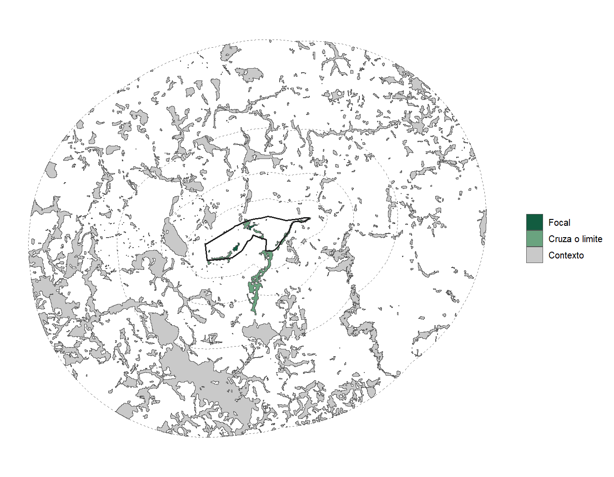
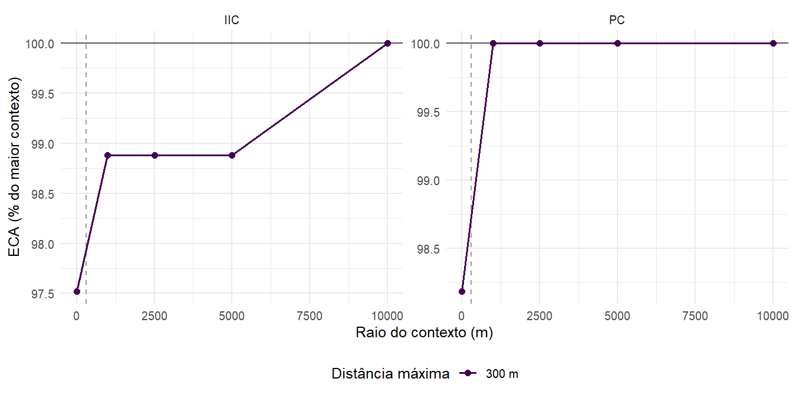
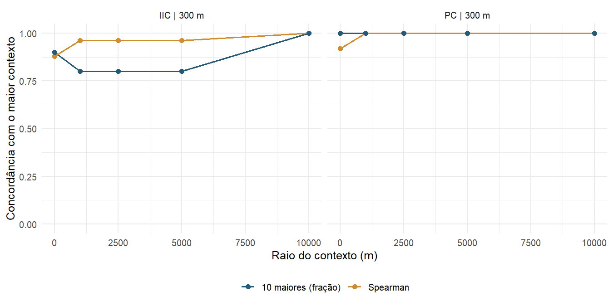
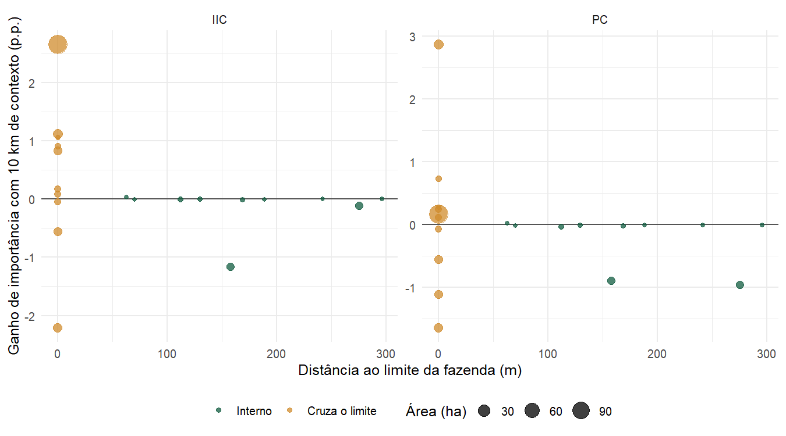
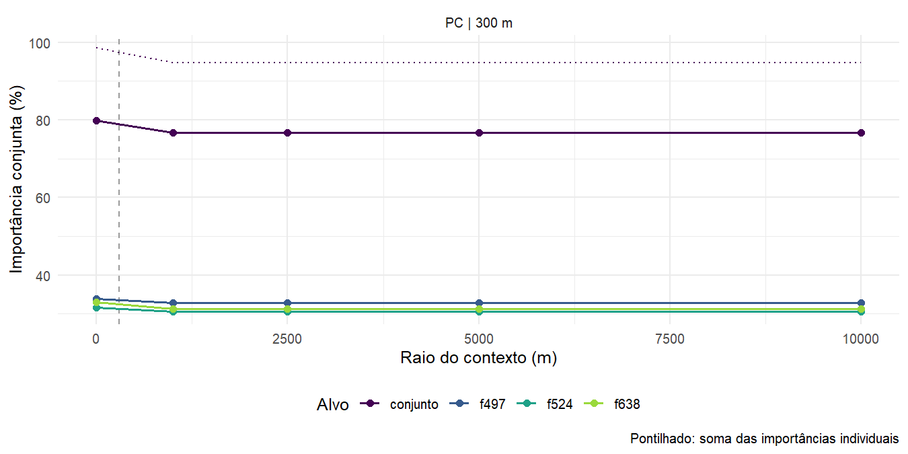

Capítulo 13 Efeito de borda e contexto ampliado
O limite da fazenda corta fragmentos e esconde os trampolins que ficam do lado de fora. Por isso, a conectividade medida só dentro da área de estudo pode estar subestimada perto da borda, e a ordem dos fragmentos prioritários pode depender do recorte. Este capítulo mede esse efeito na Lagoa do Sino, com o entorno de até 10 km como contexto.
Área focal e contexto
Com uma área focal, land_connectivity() mede a conectividade do habitat da
área de estudo usando o entorno como trampolim: cada fragmento entra com a sua
área dentro da área focal, os de fora valem só como ligação e o denominador
continua sendo a área de estudo. Assim, os índices calculados com contextos de
tamanhos diferentes são comparáveis.
connectivity_context() repete a análise para vários raios. A partir dos mapas e
das classes de habitat, ela amplia a área com o maior raio, recarrega os mapas
pela mesma via de aquisição (aqui, a leitura por HTTP), reclassifica e vetoriza
uma única vez e reaproveita as distâncias do maior contexto nos menores. O raio 0
é a análise sem contexto, igual à do capítulo 10:
mapas_2024 <- load_rasters(ufscar, start = 2024, end = 2024, method = "http",
product = "mapbiomas_brasil_c10")
contexto <- connectivity_context(mapas_2024, classes = 3, max_dist = 300,
context = c(0, 1000, 2500, 5000, 10000), metric_patch = c("IIC", "PC"),
d_ref = 150, parallel = 4)
Figura 13.1: Fazenda Lagoa do Sino (contorno preto) e os raios de contexto (tracejado). Em verde, os fragmentos de floresta da fazenda; em cinza, os do entorno.
Sensibilidade dos índices
Os índices só crescem com o raio, porque mais trampolins só encurtam caminhos.
Quando a curva se estabiliza (converged), o contexto deixa de mudar o
resultado; se ela ainda cresce no maior raio, o efeito de borda persiste.

Figura 13.2: ECA de cada raio em relação à do maior contexto. A linha tracejada marca a distância máxima de 300 m.
| Raio (m) | Índice | Fragmentos | ECA (ha) | ProtConn | Variação (%) |
|---|---|---|---|---|---|
| 0 | IIC | 26 | 25,55 | 3,92 | -2,48 |
| 1000 | IIC | 73 | 25,91 | 3,97 | -1,12 |
| 2500 | IIC | 166 | 25,91 | 3,97 | -1,12 |
| 5000 | IIC | 345 | 25,91 | 3,97 | -1,12 |
| 10000 | IIC | 904 | 26,20 | 4,02 | 0,00 |
| 0 | PC | 26 | 27,80 | 4,26 | -1,82 |
| 1000 | PC | 73 | 28,31 | 4,34 | 0,00 |
| 2500 | PC | 166 | 28,31 | 4,34 | 0,00 |
| 5000 | PC | 345 | 28,31 | 4,34 | 0,00 |
| 10000 | PC | 904 | 28,31 | 4,34 | 0,00 |
Na Lagoa do Sino, o entorno de 10 km soma 878 fragmentos aos 26 da fazenda, mas a ECA do PC sobe só 1,8% e se estabiliza a partir de 1,0 km: o grande fragmento interno domina o índice. O IIC, que não decai com a distância, ainda varia entre os maiores raios. Em áreas pequenas, estreitas ou com floresta espalhada, o efeito costuma ser maior.
Estabilidade da priorização
rank_stability compara, raio a raio, a ordem dos fragmentos da fazenda com a do
maior contexto: correlação de Spearman e sobreposição dos 10 mais importantes.

Figura 13.3: Concordância da priorização dos fragmentos da fazenda com a do maior contexto.
Efeito de borda por fragmento
Os fragmentos que cruzam o limite da fazenda são os que mais mudam com o contexto: sem ele, entram cortados, e o contexto devolve a sua forma inteira e os vizinhos de fora. Alguns ganham importância e outros perdem, porque a importância é relativa ao índice, que também cresce. Os fragmentos internos quase não mudam:

Figura 13.4: Ganho de importância de cada fragmento da fazenda entre a análise sem contexto e a de 10 km, em função da distância ao limite.
Trampolins fora da fazenda
stepping_stones lista os fragmentos do entorno que sustentam a conectividade
da fazenda. Eles têm área zero na análise focal, então sua importância é só de
conector. Com floresta a 300 m, só o IIC encontra trampolins externos: pelo
número de passos, uma cadeia de fragmentos de fora liga a fazenda ao grande
fragmento vizinho. No PC, a probabilidade decai com a distância, e o ganho vem
de contar inteiros os fragmentos que cruzam o limite, não de trampolins:
| Índice | Fragmento | Área (ha) | Conector (%) |
|---|---|---|---|
| IIC | 203 | 113,41 | 2,23 |
| IIC | 254 | 1,07 | 2,23 |
| IIC | 272 | 2,79 | 2,23 |
| IIC | 284 | 2,30 | 2,23 |
| IIC | 323 | 6,98 | 2,23 |
| IIC | 341 | 50,53 | 2,23 |
| IIC | 349 | 7,48 | 2,23 |
| IIC | 374 | 22,51 | 2,23 |
| IIC | 577 | 2408,97 | 2,23 |
| IIC | 760 | 150,95 | 2,23 |
Fragmentos-alvo
Com targets, a análise mede a importância de um fragmento ou de um conjunto
deles removidos de uma vez, raio a raio. A diferença para a soma das importâncias
individuais (interaction) mostra se os fragmentos se substituem (positiva) ou
dividem a mesma contribuição (negativa). Os alvos podem ser fragment_id, listas
nomeadas de ids ou geometrias sf, inclusive fora da área de estudo:
ps <- contexto$patch_sensitivity
top <- head(ps$fragment_id[ps$metric == "PC" & ps$radius_m == 10000 & ps$rank <= 3], 3)
alvos <- connectivity_context(mapas_2024, classes = 3, max_dist = 300,
context = c(0, 1000, 2500, 5000, 10000), metric_patch = "PC", d_ref = 150,
targets = c(list(conjunto = top), setNames(as.list(top), paste0("f", top))))
alvos$target_sensitivity
alvos$target_plotNa Lagoa do Sino, os três fragmentos mais importantes dividem contribuições: a importância conjunta fica abaixo da soma das individuais (interação negativa), porque os pares entre eles entram duas vezes na soma.

Figura 13.5: Importância conjunta dos três fragmentos mais importantes da fazenda e de cada um deles; em pontilhado, a soma das importâncias individuais.
Um único contexto
Sem a curva de sensibilidade, basta ler os mapas com context_m (capítulo
4): os polígonos herdam a área focal, e land_connectivity() a
usa sozinha. A análise funciona com qualquer via de aquisição: MapBiomas por
recortes ou por HTTP, ESA WorldCover (load_lulc()) e pastas locais
(load_local_rasters()), de qualquer país.
As figuras e tabelas deste capítulo foram geradas uma vez, neste mesmo fluxo,
por development/gerar_figuras_contexto.R (cerca de 3 min com internet) e ficam
em imagens/; o livro só as exibe.